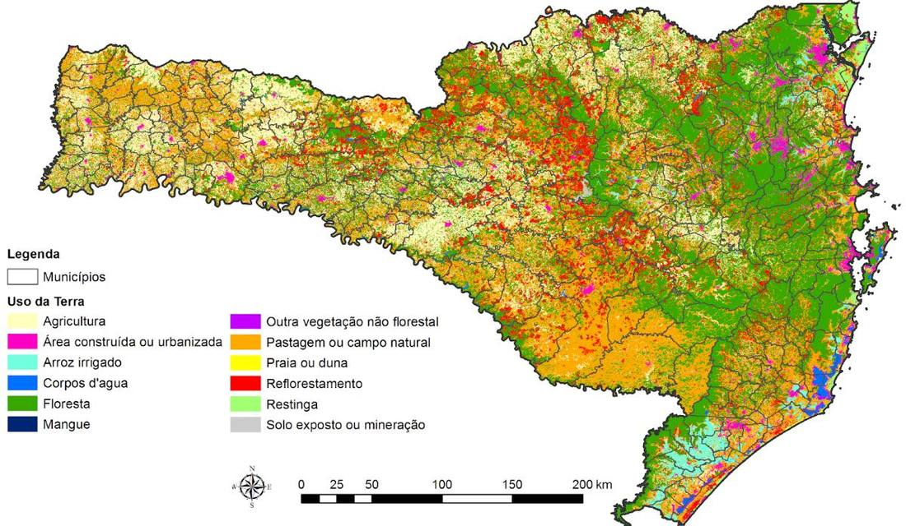
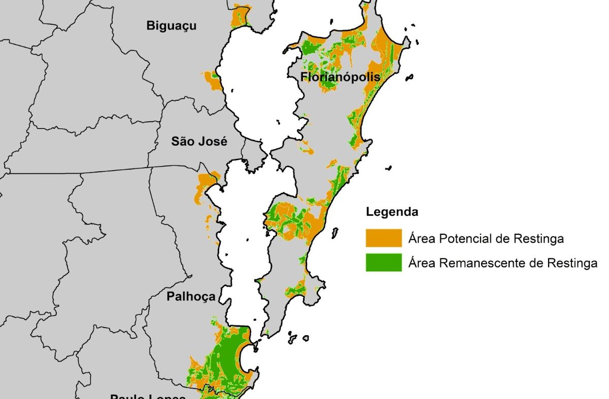
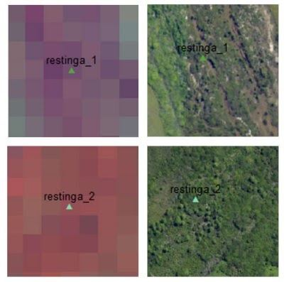
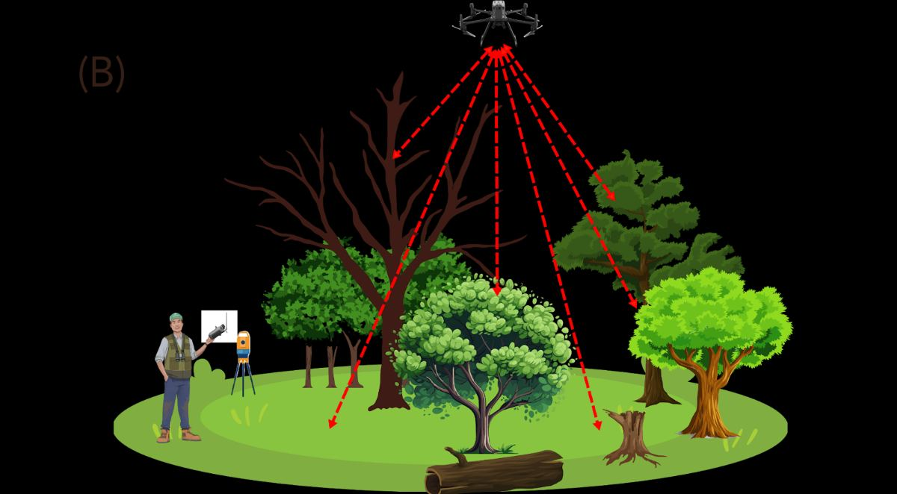
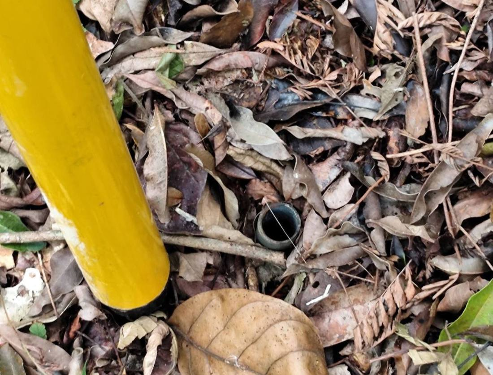

Traducido del original en portugués. Los títulos de publicaciones, las citas y los nombres se mantienen en su idioma original.
Mapeo
Institución responsable:
Universidad Regional de Blumenau (FURB)
Coordinador:
Prof. Dr. Alexander Christian Vibrans
Objetivo:
Monitorear la extensión de los bosques nativos catarinenses y de los demás usos del suelo mediante técnicas de teledetección, para identificar dinámicas y desarrollar productos y servicios útiles para la gestión.
El Mapeo es una de las acciones del FlorestaSC y busca complementar la información obtenida en campo con productos generados a partir de datos de teledetección (TD). Estos datos provienen de diversos sensores montados en satélites, que proporcionan continuamente imágenes de la superficie terrestre y permiten, por ejemplo, observar cambios en la cobertura forestal, en áreas agrícolas y ganaderas, o monitorear el proceso de urbanización a lo largo del tiempo.
Los productos generados se usarán en la planificación territorial y la fiscalización/licenciamiento ambiental a nivel local (municipal), regional y estatal. Así, las acciones de los organismos públicos involucrados en estas actividades contarán con el respaldo de los productos del mapeo.
Nota: esta actividad de mapeo pertenecía antes al subproyecto MonitoraSC, que integraba el proyecto Inventario Florístico Forestal de Santa Catarina. Tras la reformulación de la identidad del proyecto, el mapeo pasó a ser una acción del proyecto hoy llamado FlorestaSC.
Los objetivos específicos de la actividad de Mapeo son:
- Fortalecer las sinergias entre el Inventario Forestal y el Mapeo, integrando observaciones de campo con datos de TD;
- Definir metodologías estandarizadas para reconocer y cuantificar cambios en la cobertura forestal, permitiendo flujos de trabajo constantes;
- Cuantificar los recursos forestales mediante mapeos basados en modelado estadístico;
- Proporcionar continuamente a los organismos competentes mapas temáticos actualizados de cobertura y uso del suelo;
- Perfeccionar los procesos metodológicos para comprender mejor las interacciones entre los cambios de la vegetación y los datos captados por los sensores remotos.
¿Por qué es necesario nuestro trabajo si ya existen mapeos de los bosques?
Los gestores y tomadores de decisiones necesitan información actualizada y confiable para desarrollar estrategias de planificación territorial y de licenciamiento y control ambiental. Por eso buscamos comprender las limitaciones de los nuevos mapeos, presentando la calidad de los productos y mejorando la información disponible sobre cobertura y uso del suelo.
La información de cobertura y uso del suelo solo puede obtenerse cuando los equipos de procesamiento de datos de campo y de análisis de datos de teledetección interactúan y trabajan juntos. Esa es exactamente la propuesta del Mapeo dentro del FlorestaSC.
Nuestro mapeo es innovador...
...porque no existen mapeos similares que tengan:
1) Una leyenda inédita de múltiples usos del suelo (12 clases temáticas);
2) Amplia cobertura espacial;
3) Una escala y un nivel de detalle aptos para uso municipal;
4) Una metodología consistente, transparente y con código totalmente documentado y abierto.

FIQUE POR DENTRO
Para saber más sobre nuestro trabajo de Mapeo, visite también:
Metodología
Mapas
Mapas disponibles:
➤ Descarga de los shapefiles: solicítelos por correo a florestasc@furb.br o regístrese en nuestra Plataforma de Mapas (Plataforma de mapas)
Mapa de Cobertura Forestal y Uso del Suelo de Santa Catarina (MonitoraSC, 2020)

Consulte el mapa en línea y conozca la metodología
➤ Descarga del shapefile/raster: mediante registro en la Plataforma de Mapas o solicitándolo a florestasc@furb.br (Plataforma de mapas)
Lea el artículo: MonitoraSC: um novo mapa de cobertura florestal e uso da terra do estado de Santa Catarina
¿Cómo citar?
Vibrans, A.C.; Nicoletti, A.L.; Liesenberg, V. et al. MonitoraSC: um novo mapa de cobertura florestal e uso da terra do estado de Santa Catarina. Agropecuária Catarinense, v. 34, p. 42-48, 2021.
Mapa de áreas potenciales y remanentes de restinga de Santa Catarina

➤ Descarga del shapefile: mediante registro en la Plataforma de Mapas o solicitándolo a florestasc@furb.br (Plataforma de mapas)
Lea el artículo: Mapeamento das Áreas Potenciais (originais) e Remanescentes de Restinga: uma proposta metodológica para Santa Catarina, Brasil
Nicoletti, A.N.; Vibrans, A.C.; Andrade, M.Y.; da Veiga, J.L.; Bizon, A.R.; da Silva, M.S.; Lingner, D.V.; Farias, T.L. Mapeamento das Áreas Potenciais (originais) e Remanescentes de Restinga: uma proposta metodológica para Santa Catarina, Brasil Revista Brasileira de Geografia Física, v. 17, n. 1, p. 260-280, 2024.
Mapas de las especies amenazadas de extinción de Santa Catarina

Mapa de áreas prioritarias para la conservación de familias clave de la Mata Atlántica
Más información en el artículo de Oliveira et al. (2021)
Oliveira, L.Z.; Gasper, A.L.; Vibrans, A.C. Potential new areas for conservation of key botanical families in the subtropical Atlantic Forest. Biodiverisity and Conservation, v. 30, p. 3903-3917, 2021.
Esta parte de la página usa un recurso interactivo de Google Sites que no se pudo copiar. Ver en el sitio actual ↗
Áreas prioritarias para la conservación de familias clave de la Mata Atlántica – Fabaceae/Myrtaceae/Lauraceae, según el estudio de Oliveira et al. (2021)
Resumen: Las familias botánicas Myrtaceae (guamirins), Lauraceae (canelas) y Fabaceae (leguminosas) son elementos florísticos esenciales de la Mata Atlántica por su notable riqueza de especies, niveles de endemismo y funciones ecológicas. Por ello se analizaron datos del FlorestaSC para verificar si existen áreas con potencial de conservación y gran riqueza de especies arbóreas/arbustivas de estas familias. Se usó la estadística univariada local de Moran considerando la riqueza de especies de estas familias por unidad de muestreo (UA). Se encontraron seis agrupamientos de UA en el Bosque Ombrófilo Denso (FOD) y en el Bosque Ombrófilo Mixto (FOM); la mayoría alberga más de la mitad de todas las especies de estas familias observadas por el FlorestaSC, además de muchas otras de otras familias. Un agrupamiento de Myrtaceae y uno de Lauraceae en el FOD fueron los únicos superpuestos a unidades de conservación (UC). Los agrupamientos de Lauraceae en el FOM, ubicados en zonas de ecotono con el FOD, presentaron ∼50 % de cobertura forestal nativa, mientras que los de Myrtaceae y Fabaceae presentaron ∼10 %.
Mapa de ubicación de las unidades de muestreo del FlorestaSC

Haga clic aquí para acceder al mapa detallado de ubicación de las unidades de muestreo
La información sobre cada unidad de muestreo puede consultarse aquí.
Mapas en formato shapefile
En la Plataforma de Mapas del FlorestaSC (https://monitora.furb.br/) hay más de 20 capas (layers) del estado de Santa Catarina en formato shapefile.
Es posible descargar gran parte de estas capas previo registro. Aprenda a registrarse en la plataforma de mapas con este paso a paso.
Los shapefiles también pueden solicitarse por correo a florestasc@furb.br.

Entre las capas disponibles en la plataforma, algunas fueron producidas por el FlorestaSC:
- Mapa de Cobertura Forestal y Uso del Suelo de Santa Catarina (shapefile y raster)
- Mapa de áreas potenciales y remanentes de restinga de Santa Catarina (shapefile)
En la plataforma también hay capas producidas por otros organismos, como municipios (Seplan, 2013), cuencas hidrográficas (SDM) y regiones fitoecológicas (Klein, 1978), entre otras.
Vea la lista completa de capas en la Plataforma de Mapas.
Mapas en formato .jpg
Haga clic aquí para más información sobre los mapas de abajo.
Mapeo 2017–2020
Lea aquí la metodología de los mapeos realizados entre 2017 y 2020:
➤ Descarga de los shapefiles: solicítelos por correo a florestasc@furb.br o regístrese en nuestra Plataforma de Mapas (Plataforma de mapas)
Metodología del Mapeo de la Cobertura Forestal y Uso del Suelo
Base de datos
El proyecto usó imágenes satelitales Landsat-8 OLI (2017), modelos digitales de elevación (de la SDS y de la NASA – SRTM) y el levantamiento aerofotogramétrico de Santa Catarina (Santa Catarina, 2012), entre otros productos. Las imágenes se obtuvieron del USGS (https://earthexplorer.usgs.gov/), en nivel 2 (Level 2), con correcciones geométricas, radiométricas y atmosféricas de la reflectancia de superficie.
Se usaron datos auxiliares de topografía (altitud, pendiente y exposición a la radiación) y clima (sobre todo precipitación y temperatura) para mejorar la clasificación de los diversos tipos de cobertura y uso del suelo.
Los datos de las mediciones de campo del FlorestaSC forman un valioso banco de información sobre los recursos forestales y su configuración espacial. Se usaron para obtener información de referencia consistente («verdad de terreno») para entrenar y validar los algoritmos de clasificación automatizada de las imágenes satelitales.

Procedimientos
Los procedimientos metodológicos se apoyan en tres categorías principales de productos: productos de TD, productos auxiliares e información de campo.
El conjunto de procedimientos, ilustrado en el diagrama de flujo de abajo, se ejecutó de forma independiente en las 42 subdivisiones (hojas) del territorio catarinense, para contemplar particularidades locales y regionales.

Las imágenes satelitales se clasificaron con el algoritmo Random Forest, lo que dio como resultado un mapa con 12 clases temáticas, un área mínima mapeada de 0,5 ha y una exactitud global del 95 %.
FLUXOGRAMA


Metodología del Mapeo de la Restinga
Se realizaron dos mapeos de restinga:
1) Áreas potenciales de restinga: áreas potencialmente (u originalmente) ocupadas por diferentes formaciones de restinga;
2) Áreas remanentes de restinga: remanentes actuales de restinga, dentro de las áreas potenciales.
Áreas potenciales de restinga
Las áreas potenciales se establecieron cruzando cinco atributos: altimetría (NASA – SRTM v.3), modelo de acumulación (IBGE, 2004, 2009), clasificación del suelo (EMBRAPA, 2004), relieve (CPRM, 2016) y subdominio hidrogeológico (CPRM, 2007). Se clasificaron en tres niveles de probabilidad de ocurrencia de restinga: muy alta, alta y de transición, a partir de las características más probables de cada atributo en áreas de restinga y de la información de cada polígono resultante de la intersección de los cinco atributos.
Áreas remanentes de restinga
Los remanentes de restinga se mapearon con los mismos procedimientos aplicados a las demás clases de uso del suelo, según el diagrama de flujo de arriba. El algoritmo Random Forest se entrenó y luego se validó con muestras de verdad de terreno de las diversas subformaciones de restinga identificadas en imágenes de alta resolución espacial (Santa Catarina, 2012; Google Earth), en fotografías in situ del acervo del FlorestaSC y en Google Street View. En este mapeo se mapeó una única clase temática, «Restinga».

Uso del dron
El uso de drones aporta agilidad y escalabilidad a la integración de datos de inventario forestal y teledetección. El FlorestaSC usa drones con sensores multiespectral y LiDAR para complementar los datos de campo y permitir análisis más amplios y precisos de la estructura de la vegetación.
Área de estudio
Los vuelos con dron se realizan sobre las unidades de muestreo (UA) del FlorestaSC, donde también se ejecutan las actividades del Inventario Forestal. Entre junio y diciembre de 2024 se sobrevolaron 40 UA: 20 en el Bosque Ombrófilo Mixto (FOM) y 20 en el Bosque Ombrófilo Denso (FOD). Las UA del FOM se concentran en la región de la Meseta Norte y las del FOD entre el Litoral Norte y la Gran Florianópolis. (Inventario forestal)

Equipos
Los vuelos se hicieron con un dron DJI Matrice 350 RTK, con los siguientes equipos:
- una cámara multiespectral, que produce ortomosaicos con resolución espacial media de 4 cm en cinco bandas (RGB, borde del rojo e infrarrojo cercano);
- un sensor LiDAR (láser), que produce una nube densa de puntos 3D (tres dimensiones) con discretización de cinco retornos;
- un receptor GNSS diferencial RTK, que corrige la trayectoria de vuelo en tiempo real con una exactitud posicional de hasta 10 cm;
- un receptor GNSS diferencial SatLab FR-20, que registra con precisión las coordenadas de inicio y fin de cada subunidad de una UA.
Recolección de datos
Antes de la recolección de datos en campo se preparan, para cada UA, dos planes de vuelo del dron, uno por sensor (LiDAR y multiespectral). En el plan se configuran parámetros como velocidad de desplazamiento y altura de vuelo. La calidad de los datos depende de estos parámetros y de los que los equipos ajustan en tiempo real durante el vuelo, como el ISO, que determina la claridad de la foto, y el obturador, que evita imágenes borrosas por el movimiento del dron.

Dron para la adquisición de imágenes en las UA del FlorestaSC
Al ubicar la UA en campo, se realizan dos actividades: vuelos con dron y registro de las coordenadas de inicio y fin de cada subunidad de la UA. La recolección se hace en condiciones de tiempo favorables, sin lluvia ni niebla.
Antes del vuelo, se monta el receptor RTK en un lugar abierto. Luego se ejecuta el vuelo, mientras el receptor RTK corrige la trayectoria en tiempo real. El vuelo se monitorea desde el control remoto del dron.
Se realizan dos vuelos por UA:
(A) con un sensor multiespectral, para registrar múltiples imágenes aéreas;
(B) con un sensor LiDAR (láser), para obtener nubes de puntos 3D mediante la emisión de haces de luz.

Línea de vuelo (multiespectral). Cada dron indica la posición donde se obtiene una imagen. Las líneas grises representan el área del terreno cubierta por cada imagen.

El sensor LiDAR emite haces de luz que, al incidir sobre un objeto (p. ej., hoja, rama, tronco o suelo del bosque), registran una señal de retorno de cada objeto.
Después del vuelo, el equipo entra al remanente forestal donde está la UA para registrar las coordenadas de inicio y fin de cada subunidad (20 × 50 m; vea la configuración de la unidad de muestreo). El inicio y el fin de la subunidad están marcados con varillas metálicas enterradas durante el inventario forestal, que se encuentran con un detector de metales. Se usan dos receptores: el receptor RTK («base»), instalado fuera del bosque para rastrear señales satelitales y transmitir correcciones al otro receptor («rover»), usado dentro del bosque. El rover se acopla a un bastón telescópico de 8 m para ganar altura y mejorar la comunicación con los satélites.

Ubicación de la varilla metálica colocada en el inventario forestal (al inicio y al fin de cada subunidad de la UA), para registrar coordenadas con GPS de precisión.

Equipo de operación del dron

Montaje del RTK y del dron en campo

Instalación del receptor (rover) dentro del bosque, acoplado a un bastón de 8 m

Monitoreo del vuelo del dron desde el control remoto
Flujo de trabajo
Las etapas de la operación se enumeran a continuación y se muestran también en el diagrama de flujo de abajo.
- 1.ª etapa: planificación del vuelo, que incluye el análisis y la selección de las UA a sobrevolar, la configuración del vuelo en la aplicación y la logística de campo;
- 2.ª etapa: recolección de datos mediante vuelos con dron, con sensor LiDAR y cámara multiespectral;
- 3.ª etapa: preprocesamiento de los datos en el software de cada equipo (LiDAR: DJI Terra; multiespectral: Agisoft Metashape);
- 4.ª etapa: los productos del preprocesamiento se procesan en el software estadístico R para calcular y seleccionar métricas predictoras de atributos forestales;
- Por último, las métricas seleccionadas se usan como variables predictoras en modelos de predicción de atributos forestales.

Productos generados
A partir de las imágenes del dron se puede extraer diversa información sobre las características del bosque. A continuación se presentan algunos productos obtenidos por el FlorestaSC con el uso de drones:

Perfil de un bosque obtenido con el sensor LiDAR. La nube de puntos permite evaluar el dosel y la altura de árboles individuales.
Fotografía aérea del dron, que sirve de materia prima para identificar especies arbóreas mediante inteligencia artificial.
Ortofoto para extraer métricas predictoras de atributos forestales (p. ej., NDVI y NDRE).
Resultado de la aplicación de algoritmos de aprendizaje automático para clasificar puntos en suelo, sotobosque, troncos, ramas y hojas.
Modelo Digital de Superficie (en la imagen) y Modelo Digital del Terreno.
Modelo de Altura del Dosel.
FINANCIAMENTO:
Publicaciones del mapeo
En esta sección se enumeran las publicaciones y los estudios presentados en eventos derivados del trabajo de Mapeo del FlorestaSC.
Artículos
- Silva, D.A.; Vibrans, A.C.; Bollmann, G.; Nicoletti, A.N.; Lingner, D.V. Filling the gap between pasture and forests: classifying initial-stage forests in the subtropics using satellite data. Journal of Applied Remote Sensing, v. 19(3), 2025. https://doi.org/10.1117/1.JRS.19.034502 [DOWNLOAD]
- Nicoletti, A.N.; Vibrans, A.C.; Andrade, M.Y.; da Veiga, J.L.; Bizon, A.R.; da Silva, M.S.; Lingner, D.V.; Farias, T.L. Mapeamento das Áreas Potenciais (originais) e Remanescentes de Restinga: uma proposta metodológica para Santa Catarina, Brasil. Revista Brasileira de Geografia Fisica, v. 17, n. 1, p. 260-280, 2024. https://doi.org/10.26848/rbgf.v17.1.p260-280
- Vibrans, A.C.; Nicoletti, A.L.; Liesenberg, V. et al. MonitoraSC: um novo mapa de cobertura florestal e uso da terra do estado de Santa Catarina. Agropecuária Catarinense, v. 34, p. 42-48, 2021. https://doi.org/10.52945/rac.v34i2.1086
- Vibrans, A.C.; McRoberts, R.E.; Moser, P.; Nicoletti, A. Using satellite image-based maps and ground inventory data to estimate the area of the remaining Atlantic forest in the Brazilian state of Santa Catarina. Remote Sensing of Environment, v. 130. p. 87-95. https://doi.org/10.1016/j.rse.2012.10.023
Trabajos presentados en el Simposio Brasileño de Teledetección (SBSR) y en SELPER
XXI SBSR (2025) - Salvador (BA)
- Avaliação de preditores potenciais para detecção da perda de cobertura florestal. (Adilson Nicoletti) Leia – Texto
- A precisão de geolocalização de unidades amostrais pode afetar a estimativa de índices espectrais em dados de altíssima resolução coletados com drones? (Daniel Silva) Leia – Texto e Painel (Póster)
- Melhoria da acurácia e da estabilidade temporal da reflectância toa do sensor ETM+/Landsat-7 (Jonathan Müller) Leia – Texto
XXI Simpósio Internacional SELPER (2024) - Belém (PA)
- Potencial de utilização de ARPS para estimativas ecológicas em unidades amostrais do Inventário Florestal Nacional. (Daniel Silva) Leia – Texto e Apresentação (Presentación)
XX SBSR (2023) - Florianópolis (SC)
- Mapeamento da cobertura florestal de Santa Catarina (Alexander Vibrans) Leia – Texto e Painel (Póster)
- Classificação das formações da Restinga Catarinense com uso do algoritmo Random Forest (Adilson Nicoletti) Leia – Texto e Painel (Póster)
- Fragmentação florestal diminui a área foliar em florestas nativas (Daniel Silva) Leia – Texto e Painel (Póster)
- Backdating of invariant pixels: comparison of algorithms for land use and land cover change (LUCC) detection in the subtropical brazilian atlantic forest. (Murilo Schramm) Leia – Texto e Painel (Póster)
XIX SBSR (2019) - Santos (SP)
- Effects of topographic correction on natural forest reflectance in a mountainous region of southern Brazil. In: XIX Simpósio Brasileiro de Sensoriamento Remoto, 2019, Santos. Anais do XIX Simpósio Brasileiro de Sensoriamento Remoto. São José dos Campos: INPE, 2019. v. 17. p. 1-4.
XVIII SBSR (2017) - Santos (SP)
Página migrada de floresta.sc.gov.br.